Amigos que recibieron otra oportunidad
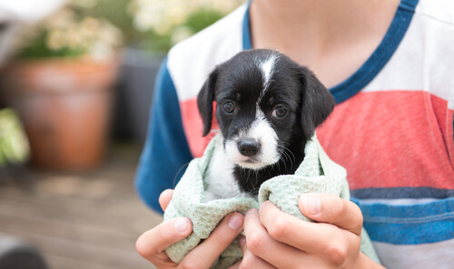
Plutarco tuvo una nueva familia el 15 de enero del 2024
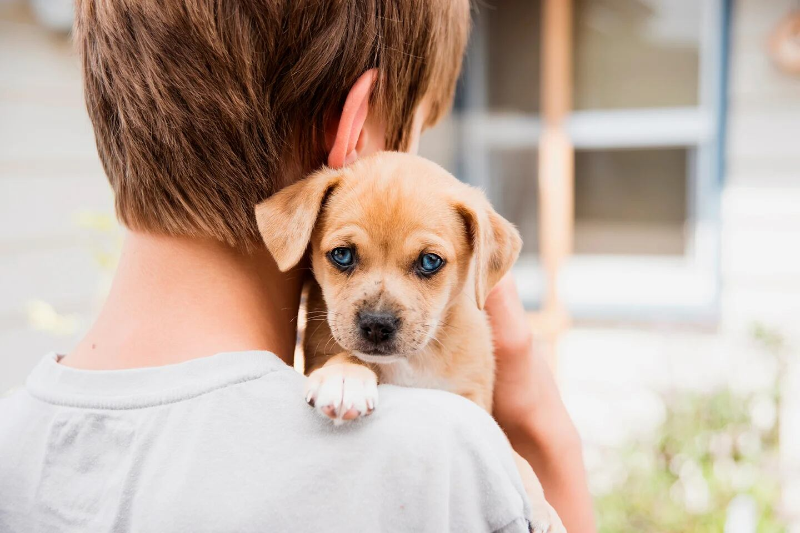
Konan Big fue recibido por Martin el 10 de abril del 2024
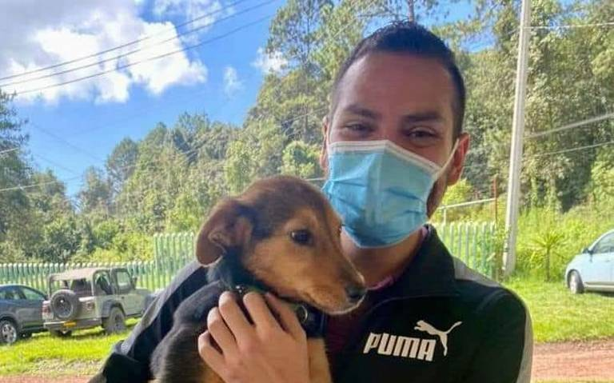
Chabo fue recibido por Juan el 10 de julio del 2023
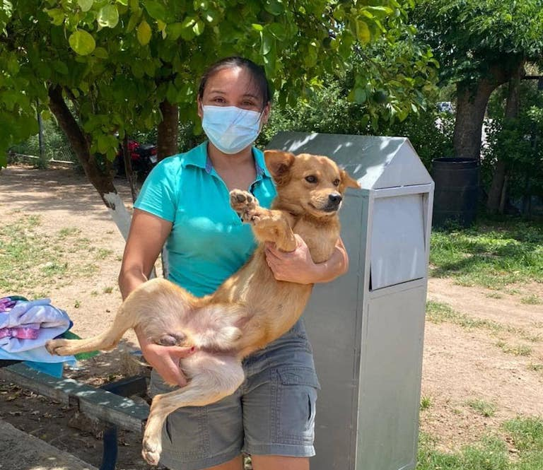
Ron Damon consiguio una nueva familia con Martina el 20 de febrero del 2024
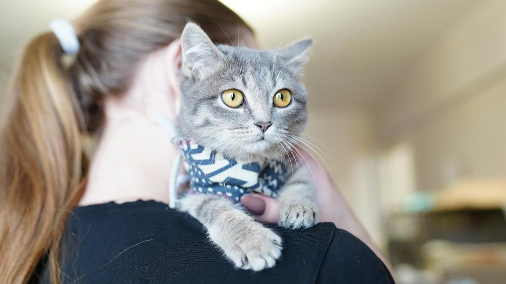
Witsi tiene familia desde el 28 de diciembre del 2023
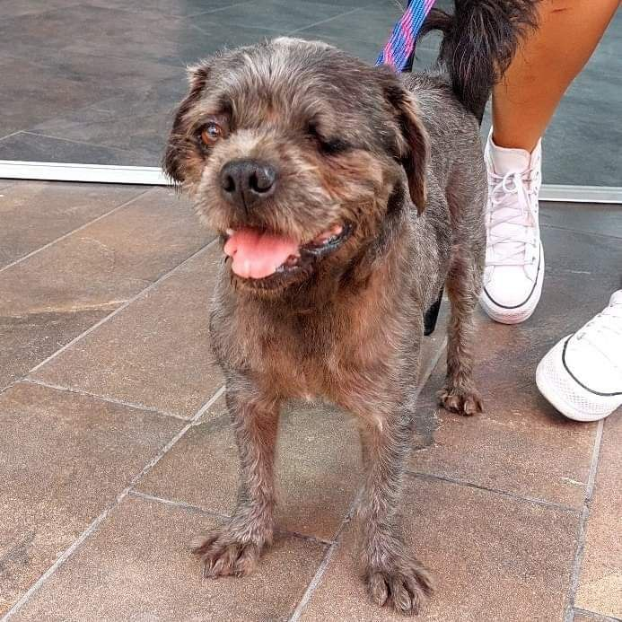
Candelario fue acogido por la familia Reyes el 3 de mayo del 2024
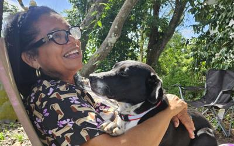
Aimep2 ya es amiga de Consuelo desde el 12 de septiembre del 2023
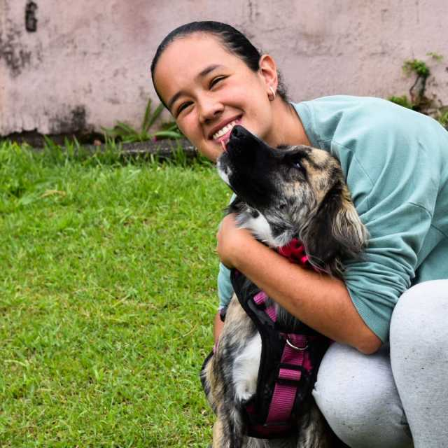
Hercules pertenece a la familia Diaz desde el 2 de agosto del 2023
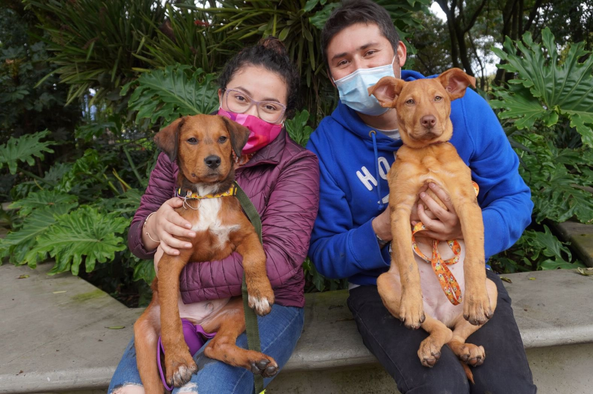
Pepe y Pepa ahora son mejores amigos de Alicia y Sebastian desde el 4 de julio del 2023
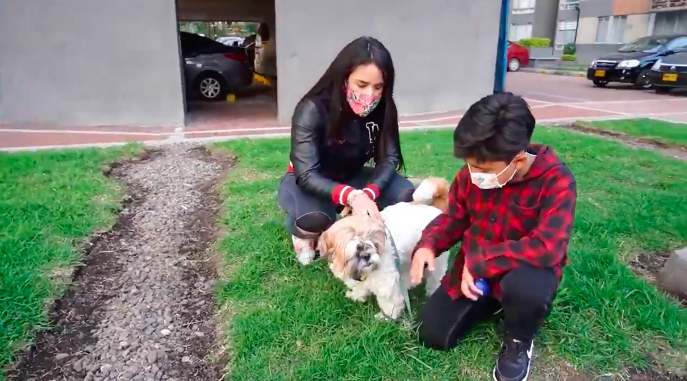
Mittens fue adoptado por Juan el 18 de marzo del 2024
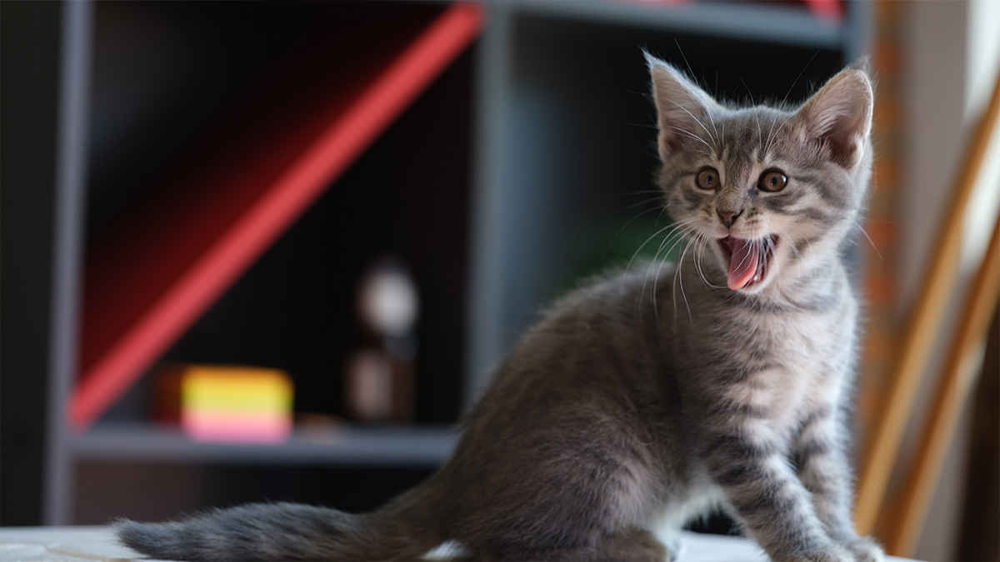
Whiskers fue adoptado por Ana el 5 de enero del 2024
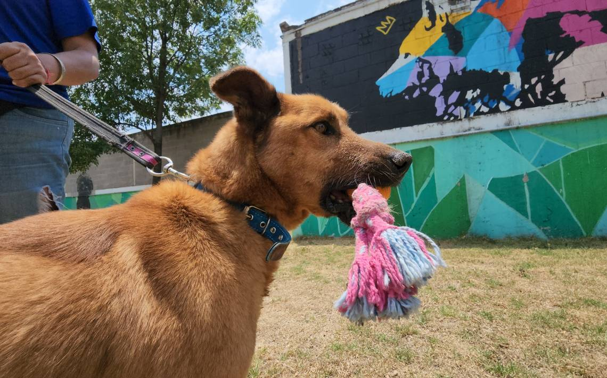
Buddy fue recibido por Laura el 25 de septiembre del 2023
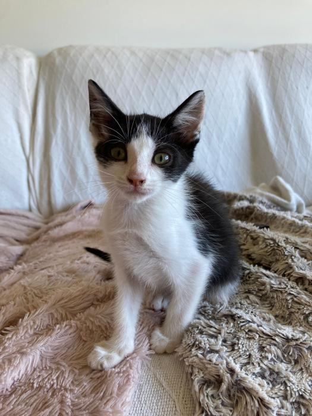
Rocky fue recibido por Carlos el 12 de mayo del 2023
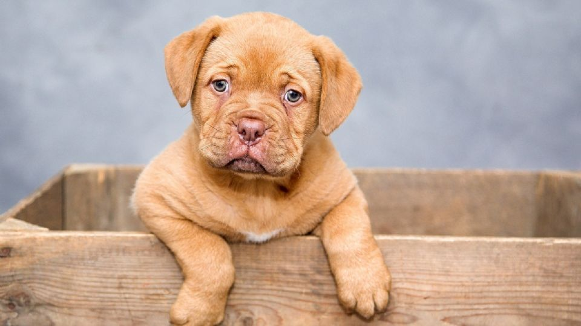
Luna fue recibida por María el 14 de febrero del 2024
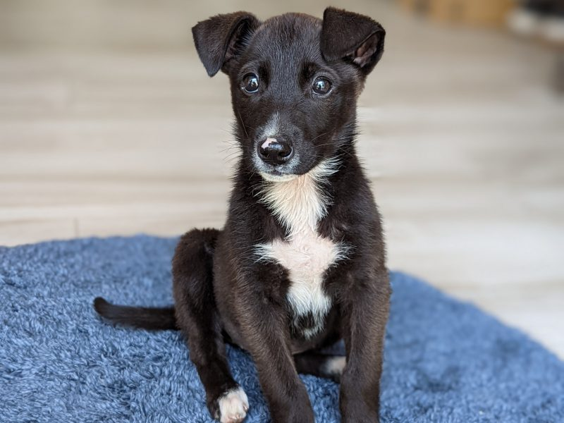
Milo fue adoptado por Paula el 9 de abril del 2024